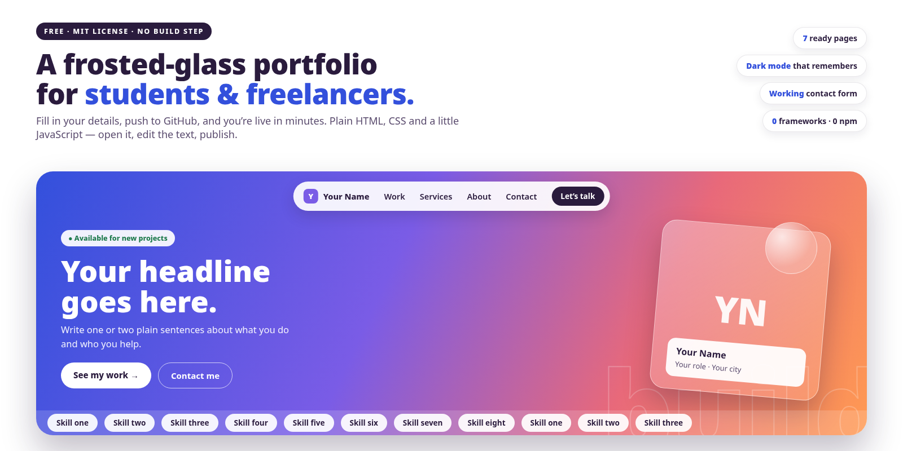
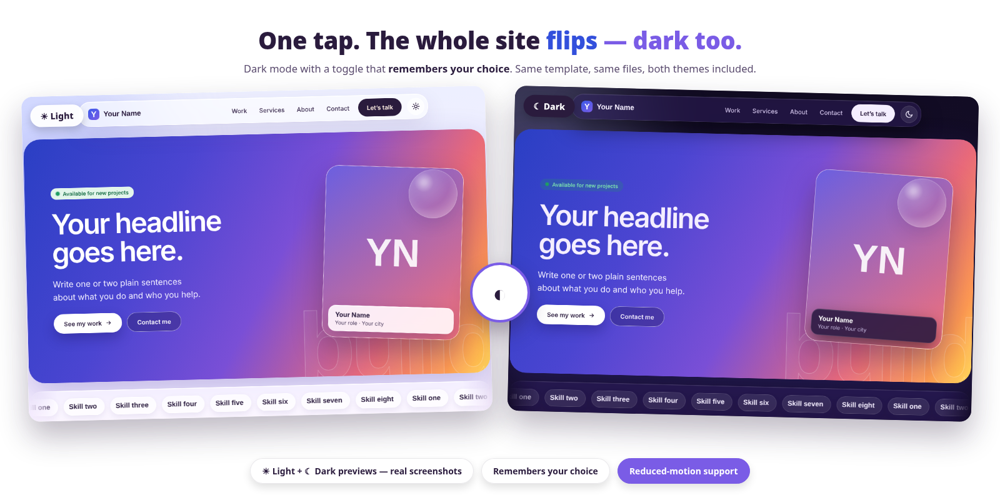
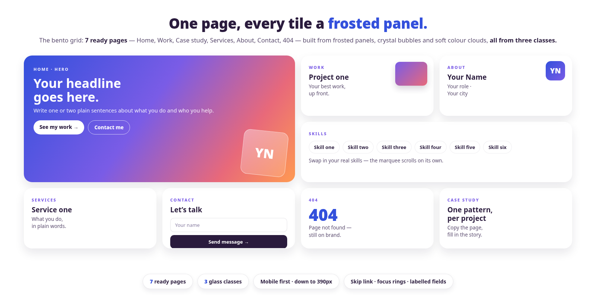
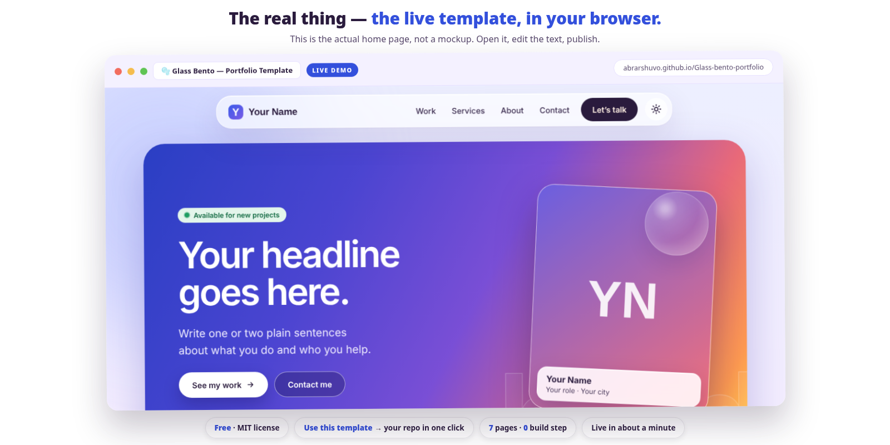
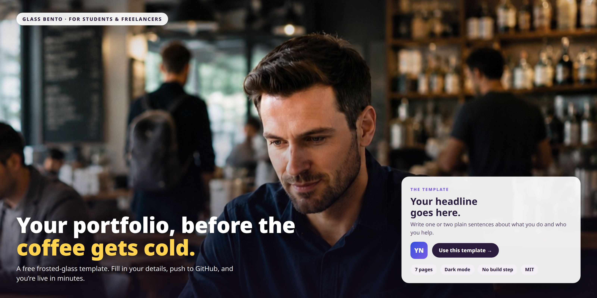
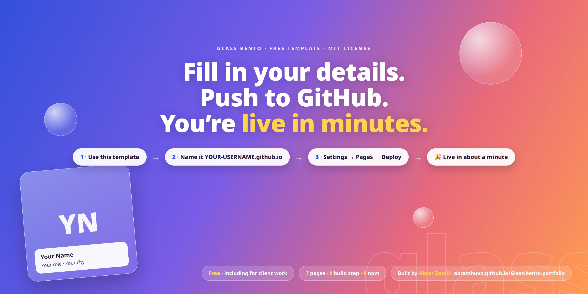
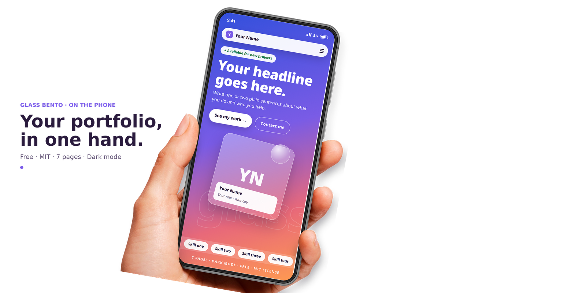

Glass Bento
A free frosted-glass portfolio template. Fill in your details, push to GitHub, and you’re live in minutes — plain HTML, CSS and a little JavaScript.
Who this is for: students and freelancers who need a portfolio but don’t want to build one from scratch.

A portfolio takes weeks to build from scratch. So most people never start one.
Students and freelancers know they need a portfolio, but building one from a blank file means learning a framework, designing every page and wiring up a contact form first. The portfolio keeps waiting for a free weekend that never comes.
Three steps
Use this template
One click copies the whole template into a repo in your name.
Fill in your details
Swap the sample text — your name, role, skills and projects — for your own.
Deploy on GitHub Pages
Settings → Pages → Deploy, and the site is live in about a minute.
Built to be opened and edited
Plain HTML and CSS, nothing to install
No framework, no npm, no build step. Open a file, edit the text, publish.
Sample text that looks like sample text
Every placeholder says “Your Name” or “Skill one”, so nobody mistakes it for finished copy.
Dark mode that remembers
One toggle flips the whole site, and the choice is saved for the next visit.
Free to use, ready to publish — live in about a minute.
Free under the MIT license — including for client work.
Screens
The gallery
Seven photos of the template — the hero, dark mode, the bento grid, the live site, the poster and the phone.







More projects
Other things I’ve built — scroll through the rest.


Want something like this?
Tell me about your project. I reply within one working day.